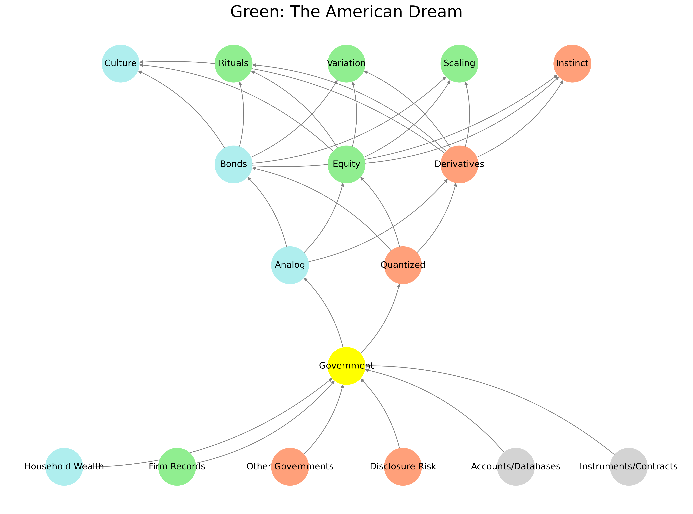

<aside id="infobox">
    
    <table class="infobox">
        <caption>Fractal Grammar Framework</caption>
        <tbody>
            <tr><td><strong>Subject:</strong> Epistemic Compression</td></tr>
            <tr><td><strong>Context:</strong> Ukubona Core Topology v1</td></tr>
            <tr><td><strong>Date:</strong> May 18, 2025</td></tr>
            <tr><td><strong>Framework:</strong> Five-Layer Fractal Topology</td></tr>
            <tr><td><strong>Themes:</strong> Grammar, Prosody, Salience, Fractals, Cognition</td></tr>
        </tbody>
    </table>
</aside>